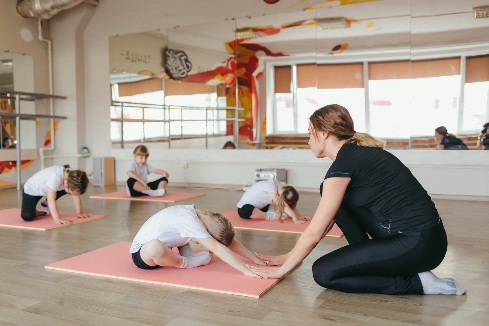

Главный телефон для справок:489-480
Масленикова 28,Модный дом "Роба"(5 этаж)

Занятия для самых маленьких танцоров от 3х лет— это ритмика, партерная гимнастика, основы классического танца, эстрадный и народный танец. Для детей, продолжающих обучение, в программу включаются основы jazz – modern, contemporary. Даже самые юные танцоры принимают участие в городских мероприятиях и концертах, выступают на различных сценах города Омска.
Ведут работу группы для различного возрасты, группы выходного дня и группы для школьников, учащихся 2 смены.